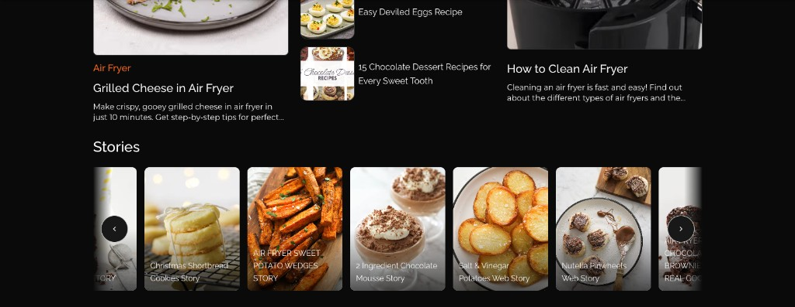
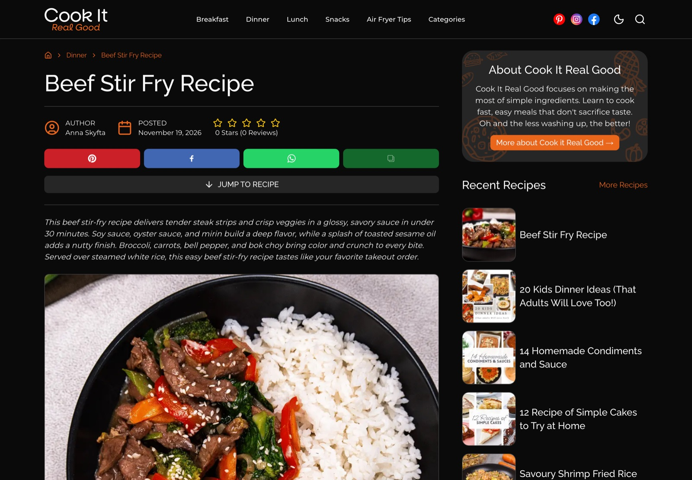
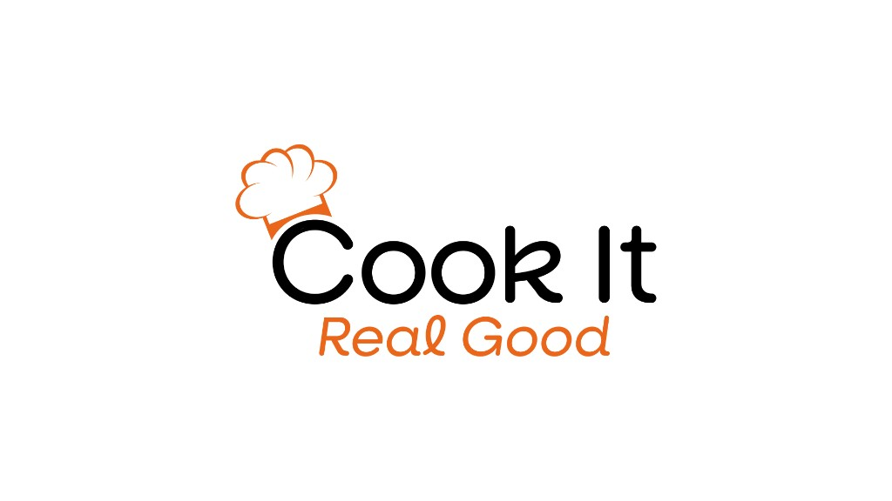

Case · 2025
Cook It
Real Good
About 500 recipes,
off WordPress and onto
headless Next.js
in one to two days.
- I led the move of roughly 500 recipes out of legacy WordPress using Node.js scripts, and swapped the recipe plugin from Mediavine to WP Recipe Maker (WPRM).
- The WordPress pieces — WPRM, Feast, Kadence — were rebuilt as custom Next.js components, recipe cards and lists included, so the headless front end stays consistent.
- Web Stories and schema.org data (Recipe, Organization) were added so search visibility survived the move.
- Hosting moved from a VPS with Coolify (Hostinger) to Railway, with PostHog for analytics and a reverse proxy in front.
Next.jsReactTypeScriptTailwind CSSBunWordPress REST APIRailwayPostHogNginxSSL/TLS



Up next